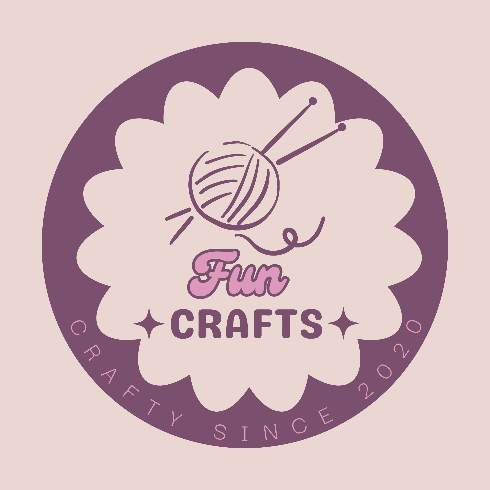

This is a site to help you find and pick your next crochet project! In projects you will find details about each project, from supplies needed to step-by-step instructions, and you can view finished results on the results page.
Select a page from the menu in the upper left corner to get started!
